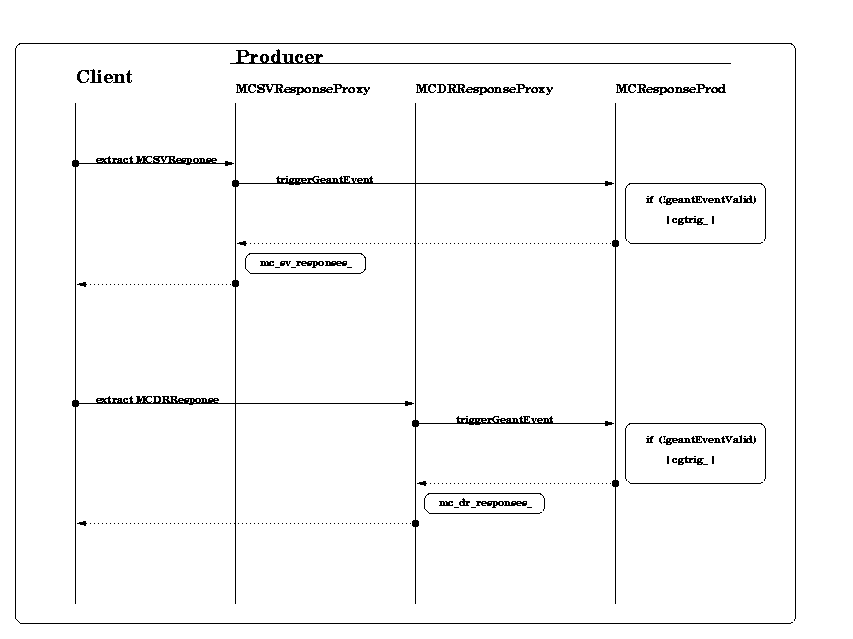

updateBeginRun().
The MCxxResponseProxy.cc proxies are bindable proxies
inorder to update Cleog's begin run data. The proxy's
method updateBeginRun() are bound to the BeginRun stream;
this calls the MCResponseProd method
updateBeginRun() to determines if Cleog's begin run
data needs to be updated.
The proxy's method invalidateCache() calls the
MCResponseProd producer method invalidateGeantEvent()
which tells the producer we need to trigger Geant for the next event
and deletes the ptrTable of the MCxxResponse objects.
The proxy's faultHandler() method determines if Geant needs
to be triggered and then creates the MCResponse objects. The proxy
first calls the MCResponseProd method triggerGeantEvent()
which triggers Geant for the event if needed. Then the MC Responses are
created for the event via a call to Fortran subroutine
mc_xx_reponses_() for sub-detector xx. The Fortran
subroutines pass the MC Response info back to the C++ proxy using the
"on-the-fly" or "bulk-insertion" method (see above) and the proxy
creates the MCxxResponse objects. This is illustrated by the
diagram below.

The figures from xfig will not show correctly in ghostview but
should print fine (although xfig isn't WYSIWYG so there might
be minor problems).